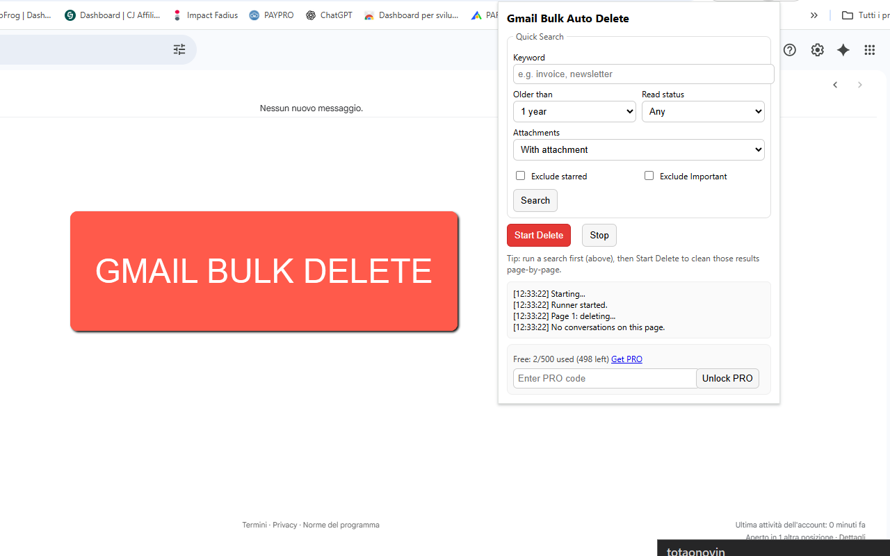
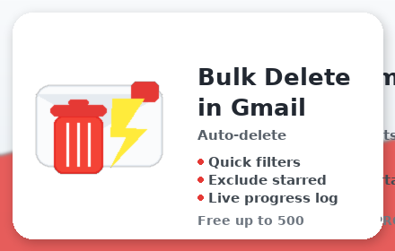

Bulk Delete Emails in Gmail
Bulk Delete Emails in Gmail helps you clean up your mailbox quickly and safely — right inside the Gmail web interface. Run a search, hit Start Delete, and the extension selects and deletes the conversations on each results page, then moves to the next page automatically. It uses Gmail’s own toolbar, just like you would, with robust, language-agnostic selectors.
Set quick search filters — including keyword, older_than, read/unread, attachments, and exclusions — then click Start Delete. Watch a live log showing exactly what’s selected, deleted, and which page you’re on. Free includes a hard stop at 500 deletions; upgrade to PRO for unlimited cleanups.
🚀 Quick Start
- Open Gmail and the extension popup.
- (Optional) Set filters: Keyword, Older than (7d, 1m, 1–3y), Read/Unread, Attachments, Exclude starred, Exclude important.
- Click Search to load the results in Gmail.
- Click Start Delete — the extension selects all rows on this page, clicks Gmail’s Delete, then navigates to
/p2,/p3, … and repeats. - Click Stop anytime to pause.
📷 Screenshots


✅ Features
- One-click bulk delete: page-by-page deletion of search results using the standard Gmail toolbar.
- Quick filters: Keyword;
older_than(7d, 1m, 1–3y); Read / Unread; With / Without attachments. - Exclusions:
-is:starred(exclude starred) and-is:important(exclude important). - Live progress log: see “Selected N rows”, “Clicked Delete”, and page navigation updates.
- Works in background tab: continues while you browse other tabs (Chrome may throttle timers slightly).
- Safe by design: all deletions go to Trash first; you can restore until you empty Trash.
- Language-agnostic: resilient selectors that work across Gmail locales.
🔧 How it works
- Runs as a content script on
mail.google.com, clicking the same UI controls you would. - Selects all conversations on the page (via header checkbox), waits for the Delete button, clicks it, then navigates to the next page suffix (
/pN). - Respects your current search — you control what gets deleted by refining the Gmail query.
🆓 Free vs PRO
- Free: up to 500 deletions total. A hard stop triggers at the limit with an upgrade prompt.
- PRO: unlimited deletions. Purchase PRO
🔒 Permissions (why they’re needed)
- Host:
mail.google.com/*— to operate on Gmail pages only. - Storage: saves your preferences and Free/PRO status locally.
- Tabs: allows the extension to safely send a Stop signal to the active Gmail tab.
❓ FAQ
Does it keep running if I switch tabs or minimize?
Yes, it continues in the Gmail tab. Chrome may slow timers slightly in background tabs.
Where do deleted emails go?
To Gmail’s Trash. You can recover them until you empty Trash.
Can I exclude important messages?
Yes — use “Exclude starred” and “Exclude important” (adds -is:starred and -is:important to the query).
It stopped at 500 deletions.
That’s the Free limit. Upgrade to PRO for unlimited cleanups.
Is this affiliated with Google?
No. This is a third-party tool. Use at your own discretion.
Privacy?
All actions occur locally in your browser; the extension doesn’t send your email data to any server.